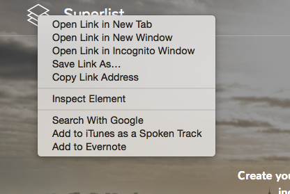
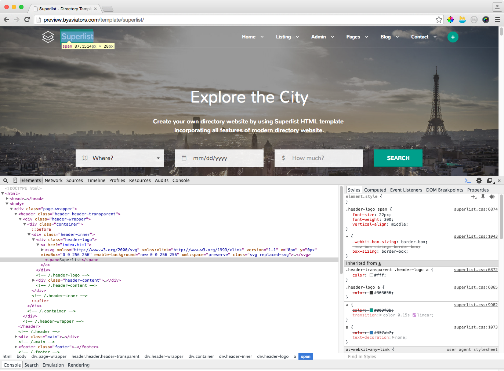
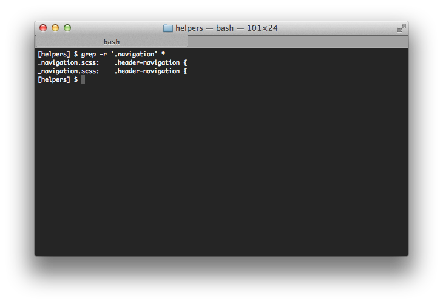

Superlist- Directory Template
Overview
Folder structure for assets/ directory
- css - contains css files which were generated from scss files
- scss - contains scss files
- img - contains site images
- js - contains site javascripts
- fonts - contains fonts used on the site
- libraries - contains third party libraries used in the theme
Documentation links
Looking for right SCSS
Template is split into large amount of small helper files. Sometimes is hard to know which file to open. Here are saveral ways how to find correct file.
Using browser
Template has source maps support. If you don't know what the source maps are read more at http://thesassway.com/intermediate/using-source-maps-with-sass
We are using Chrome for development but next example should work similar in different browser.
Firstly open your website in browse and make right click on element which you want to modify and select inspect element.

After that console will display at the bottom of browser. At the right side you can which styles are applied on inspected element and you can see which file contains that properties.
Using grep
If you are on Mac or Linux, I recommed to using grep (terminal) to find what you are looking for. For example we are looking file which is containg .navigation class we can use command below.
Custom Colors
You can see color definitions in assets/scss/_variables.scss. Feel free to change the colors as needed. After editing the colors you need to compile the sass files. In template there is a bundled automation script so you can compile files easily, just check example below.
$ cd project
$ npm install gulp gulp-sass
$ gulp compile

Bootstrap
Superlist template uses Bootstrap library heavily. Please consider the bootstrap 3.x documentation as extended documentation to Superlist template, as most of the answers can be found there.
Read documentation
Please pay increased attention to following sections of Bootstrap documentation:
Styling
For CSS files we are usign SASS. The CSS loaded in templates is preprocessed.
SASS Installation Instructions
SASS files structure
- assets/scss/helpers/_admin.scss - Admin Structure
- assets/scss/helpers/_buttons.scss - Buttons
- assets/scss/helpers/_card.scss - Cards
- assets/scss/helpers/_categories.scss - Categories
- assets/scss/helpers/_comments.scss - Comments
- assets/scss/helpers/_commons.scss - Commons
- assets/scss/helpers/_detail.scss - Detail
- assets/scss/helpers/_detail_gallery.scss - Detail Gallery
- assets/scss/helpers/_events.scss - Events
- assets/scss/helpers/_faq.scss - FAQ
- assets/scss/helpers/_filter.scss - Filter
- assets/scss/helpers/_footer.scss - Footer
- assets/scss/helpers/_forms.scss - Forms
- assets/scss/helpers/_fullscreen.scss - Fullscreen
- assets/scss/helpers/_header.scss - Header
- assets/scss/helpers/_header_nav_user.scss - Header Navigation User
- assets/scss/helpers/_header_statusbar.scss - Header Statusbar
- assets/scss/helpers/_hero_image.scss - Hero Image
- assets/scss/helpers/_hero_slider.scss - Hero Slider
- assets/scss/helpers/_hero_video.scss - Hero Video
- assets/scss/helpers/_invoice.scss - Invoice
- assets/scss/helpers/_map.scss - Map
- assets/scss/helpers/_pagination.scss - Pagination
- assets/scss/helpers/_partners.scss - Partners
- assets/scss/helpers/_posts.scss - Posts
- assets/scss/helpers/_posts_detail.scss - Posts Detail
- assets/scss/helpers/_pricing.scss - Pricing
- assets/scss/helpers/_promotions.scss - Promotion
- assets/scss/helpers/_reviews.scss - Reviews
- assets/scss/helpers/_social.scss - Social
- assets/scss/helpers/_testimonials.scss - Testimonials
- assets/scss/helpers/_users.scss - Users
- assets/scss/helpers/_variables.scss - Variables
- assets/scss/helpers/_widgets.scss - Widgets
JavaScript
$(document).ready(function() {
'use strict';
});
Isotope
var isotope_properties = $('.properties-isotope');
isotope_properties.isotope({
'itemSelector': '.item'
});
$('.properties-filter a').click(function() {
$(this).parent().parent().find('li').removeClass('selected');
$(this).parent().addClass('selected');
var selector = $(this).attr('data-filter');
isotope_properties.isotope({ filter: selector });
return false;
});File Input
$('#input-file').fileinput({
initialPreview: [
" ",
"
",
" ",
],
overwriteInitial: true,
initialCaption: "Your Uploaded Properties"
});
",
],
overwriteInitial: true,
initialCaption: "Your Uploaded Properties"
});Google Map
var map = $('#map');
var markers = new Array();
var icons = ['support', 'beer', 'plane', 'flag', 'wifi', 'tint', 'star', 'cutlery', 'music', 'recycle'];
function get_gps_ranges(center_lat, center_lng, range_level_lat, range_level_lng) {
var lat = center_lat + (Math.random() * (range_level_lat + range_level_lat) - range_level_lat);
var lng = center_lng + (Math.random() * (range_level_lng + range_level_lng) - range_level_lng);
return Array(lat, lng);
}
for (var i=0; i < 50; i++) {
var position = get_gps_ranges(40.761077, -73.983307, 0.08, 0.60);
var icon = icons[Math.floor(Math.random()*icons.length)];
markers.push({
latitude: position[0],
longitude: position[1],
marker_content: 'marker-content',
content: 'infobox-content'
});
}
var map_settings = {
infowindow: {
borderBottomSpacing: 0,
height: 195,
width: 165,
offsetX: 30,
offsetY: -120
},
cluster: {
height: 40,
width: 40,
gridSize: 60
},
zoom: 11,
transparentMarkerImage: map.data('transparent-marker-image'),
transparentClusterImage: map.data('transparent-marker-image'),
markers: markers,
styles: map.data('styles')
};
if (map.length) {
map.google_map(map_settings);
}
Listing Detail Gallery
/**
* Detail gallery
*/
if ($('.detail-gallery-index').length != 0) {
$('.detail-gallery-index').owlCarousel({
items: 5,
nav: true,
dots: true,
navText: ['', '']
});
}
$('.detail-gallery-list-item a').on('click', function(e) {
e.preventDefault();
var link = $(this).attr('rel');
$('.detail-gallery-preview img').attr('src', link);
$('.detail-gallery-preview a').attr('href', link);
});